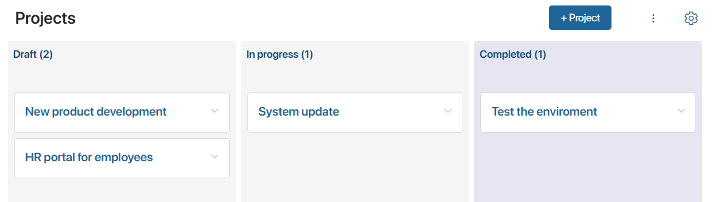
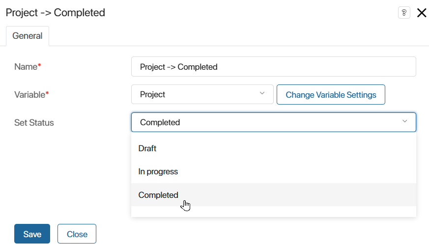

Work with the project is done in stages. First, you create a draft of the project and make a calendar plan with tasks. Then the project is gradually implemented and archived after all tasks are completed. Project stages make up its lifecycle, which can be recorded in the system and tracked by statuses.
By default, the following statuses are configured in the Projects app:
- Draft. This status is assigned to a new project when it is created, as well as to a project restored from the archive.
- In progress. This status is to a project with the Draft status when the user clicks on the Open button on the project page. The action is available for a user with the permissions to edit the plan. Instead of the In progress status, you can add stages present in your company: Estimating, Planning, Testing, etc.
- Completed. A project that has been archived.
Thus, the lifecycle is represented as a chain of statuses with rules of project transfer between them.
The current status of the project is displayed on its page in the About the Project widget.
On the Projects app page in the Kanban board display mode you can easily view all stages of the lifecycle and the current status of the project. You can also manually move the project to another stage here if this option is configured.

If your company uses project types, you can view the lifecycle and current statuses of projects of that type on the app page of the selected type.
Configure project lifecycle
Creating a lifecycle involves several actions that the system administrator performs in the Projects app settings and the project type apps:
- Configuring app statuses.
- Creating business processes for automatic status change.
- Setting buttons on the page of the app item to launch the created processes.
начало внимание
If you have customized statuses, page forms and processes in the Projects app, these settings will automatically apply to new project types you add. The settings will not apply to previously created types.
конец внимание
Let’s take a closer look at the lifecycle configuration using the Projects app as an example:
- Select Status Field in the app menu and change the default settings:
- Set up all lifecycle stages by defining status names and adding new ones.
- Define the initial and final stages of work with the project.
- Set the order of the project transfer to the next stages.
- Configure the order of displaying lifecycle stages in the Kanban board mode on the app page.
- Define the permission to change the status.
- Set up the automatic transition of the project from one lifecycle stage to another. This will allow you to set the conditions required for such a transition. To do this, create business processes associated with the Projects app, in which the Manage Status activity is used. For example, you can set the project transition from Planning status only after the project budget is approved in a business process.
By default, there are processes associated with the Projects app to:
- Change the project status from In progress to Completed. This allows you to archive the project.
- Change the status from Completed to Draft. This is used to reopen the archived project.
In the settings of the Manage Status activity, select the status to which the Projects app item will move during the process flow.

- On the project page, add buttons to start the processes created in step 2. In the button settings use the following options:
- Show. Define the permissions for which the button will be available on the project page. For example, only employees with the right to edit the project can archive and reopen the project.
- Only for selected statuses. The button will be displayed only on the page of a project with a certain status. By default:
- On a project page with the In progress status, there is the End and Archive button. By clicking on it, the can start the process of project archiving and transition to the Completed status.
- On a project page with the Completed status, there is the Reopen button, which allows you to reopen an archived project.
The set of actions on the project page can be configured according to your project lifecycle settings.
Found a typo? Select it and press Ctrl+Enter to send us feedback